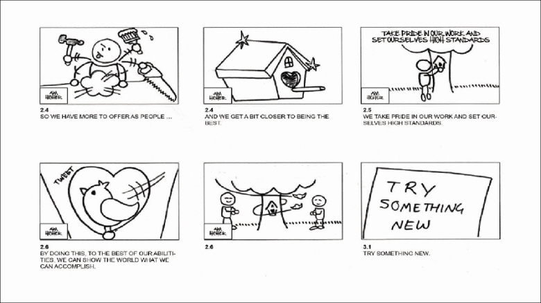
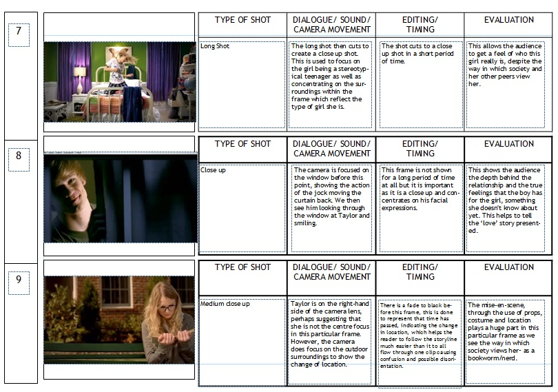

6.810 Engineering Interactive Technologies (fall 2018)
Video Taking + Editing
Upload 1 (due end of class, Nov. 16, 2.30pm):
upload your 1 minute video of your touchpad.
Goal for Today:
We are going to shoot + edit a 1 minute video of your touchpad today.
We will show you how to cut the video and create text overlays etc.
This is work in progress, I will remove this line when I'm done.
Step 1: Draw a Short Storyboard (5 min)
Take a piece of paper and sketch out the scenes you are planning to shoot.
- What do you want to show in which scene?
- What would you label in the image?
- Which text should be at the bottom?
Here's an example we created for our touchpad:
Replace with touchpad storyboard.

Storyboards do not necessarily be hand-drawn.
You could also make rotoscopes, or use images directly (either from the internet or
in your specific case where you already have the implemented touchpad ready, you could also snap photos from the prototype and use them in the storyboard).
Replace with touchpad photo storyboard.

Step 2: Animatics
An animatic is an animated storyboard to get a better feeling for the timing and length of the scenes in a video.
Due to time reasons we will not do this today, but I thought I let you know that this tends to be used not only in hollywood movies but is also very standard for any type of product marketing video since it's much cheaper to produce than the actual video.
Play both videos at the same time:
Step 3: Shoot Video (15 min)
Let's go for it and shoot the video scenes from your video storyboard.
Read the tips below before you get started.
Clean Background
Same as with the photos, use a clean backdrop and make sure there is no crap in the image that shouldn't be there.
Never Zoom
Yes, you can zoom to find a good image frame *before* you start recording, but *after* you hit the record button you should never ever zoom. Video material that uses zooming will immediately make you look unprofessional.
The reason for this is that the very act of zooming has no equivalent in the human eye (our eyes cannot zoom in and out) and thus the material will always look unnatural.
Always use a tripod
Please always use a tripod, otherwise your video will be shaky.
Make sure the water balance is leveled.
Shoot every scene multiple times
I always shoot every scene 3 times just in case something went wrong and I didn't notice. I also ideally slightly vary the action (e.g. come into the frame with the finger a little steeper or flatter).
Keep the placement of sub-titles and labels in mind!
Keep in mind you will put subtitles in the lower half of the video later on.
Or you will put labels somewhere, did you leave enough space in the frame?
upload your 1 minute video of your touchpad.